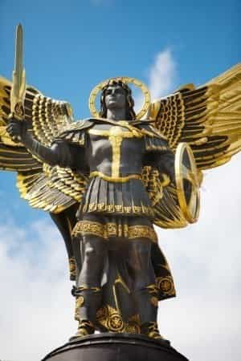

< < < Back
How Aristotle’s First Principles Can Help You Understand The World – Return Of Kings
Last week, we took an initial glance at how philosophy is the science that seeks to analyze and abstractly consider all things, until the simplest, most extensive and generally applicable elements of all things can be plainly seen, thence offering a synthetic and integral understanding of all reality. I’d like to flesh this idea out just a bit more, looking at some of Aristotle’s ideas about first principles.
What we generally think of as “science,” Aristotle correctly called αἱ ἐν μέρει ἐπιστήμαι, “the partial sciences,” because they do not deal with the integral whole of reality, but deal with parts thereof that share some thing in common—i.e., astronomy deals with the nature and activity of the heavenly bodies in a broad sense; biology deals with living cells and organisms, etc.
Now, it is plain that the first knowledge a child has is spontaneous and more or less immediately sensory. With maturity, the mind begins to form connections and can begin to ruminate and reflect on what it perceives. This is the beginning of forming a scientific approach to knowledge.
Now, a man would die long before he could consider all the things in the cosmos from all perspectives. Even if he could do this, he would still feel the urge to unify this knowledge into an integral understanding of the whole, for this is the nature of (the nobler) man. Thus, rather than waste ourselves in that impossible task, Aristotle made the best progress by seeking to identify, in the first place, what was common to all things—to all particular sciences, and all things subject to our intellectual investigation and reflection.
Many may be tempted to think that Aristotle lived a long time ago, and surely we’ve made “progress” since then… so perhaps he is a bit outdated, no?
This is our modernist brainwashing kicking in. If one stops to think about it, we are considering the most basic principles of all things, and of all thought. It is the kind of thing that the first mind prepared to make such a reflection, and to share the fruits of his contemplation, would make. And so, it is not surprising that the classical period of the most ancient, developed literary culture in the West, would come to its crown and conclusion with such a systematic exposition of thought, so long ago. These principles obviously do not change over time, so we would certainly expect them first to have been discussed a long while ago.
Aristotle saw an hierarchy, indicating that the man of experience is keener than the man of mere sensation, and the craftsman more than the man of experience only; the man trained in a partial science is wiser still, but those trained in the speculative sciences are wiser than all (if well trained), because τὴν ὀνομαζομένην σοφίαν περὶ τᾶ πρῶτα αἴτια καὶ τὰς ἀρχὰς ὑπολαμβάνουσι πάντες (“all understand the thing called ‘wisdom,’ to treat of first causes, and principles”). St. Thomas agrees, defining philosophy (sapientia, “wisdom”), as scientia quae considerat primas et universales causas (“the science that considers the first and universal causes”).
The cardinal explains to us what a science is not.
“It is not “spontaneous intellectual knowledge, which scarcely gets beyond the surface of things and does not center in a systematic way around any one object… It is opposed to belief and historical knowledge. ‘To know’ (scire, “science”) is not to accept on the authority of another, but to have a personal understanding. Lastly, it is opposed to uncertain, conjectural knowledge, for science implies certitude.”

As we continue down this path, we may be surprised to learn how many things we may know with certitude, contrary to the rampant subjectivism that defines our epoch.
So, philosophy is the science dealing with universal principles. What are principles? The English term is from Latin principium, identical to Aristotle’s Greek term, ἀρχή (arche): “beginning.” The Cardinal explains that this is because, by “principle,” we mean to denote the origin of a certain influence or contribution to the things naturally subsequent to these principles. He makes a distinction when discussing principles: we call principles “causes,” when we speak of actual causes in the real world. But when they are considered in a man’s mind, they are called “reasons.”
He further calls upon us to observe the distinction between a real cause, albeit contemplated in the mind as a reason, and a reason which is merely one of logical order, and not of causation in any sense. He gives the example of triangles and right angles, saying the mind can perceive the reason why the sum of triangle’s angles must equal the sum of two right angles; but this is not because the triangle is a “cause” of this truth in any sense; we merely perceive the logical predication involved.
Aristotle saw that there were four ways of describing all things by their causes. It will help to remember that “cause,” here, is not mere “cause and effect;” rather, “cause” here means “a principle contributing to subsequent existence.” The four causes are: the Formal Cause, the Material Cause, the Efficient Cause and the Final Cause.
Using the traditional example of a statue—say, a bronze statue of St. Michael the Archangel, let us look at these causes.

Formal Cause
This deals with what this thing is, specifically. If it is a statue, why is it a statue? What kind of statue is it? What makes it a statue? The recognizable form of St. Michael—i.e., not St. Michael himself, but his image or traditional appearance, formed from some material—is the Formal Cause. But we can distinguish further between an accidental form, and a substantial form. The imaginary form of St. Michael the Archangel could be formed in many substances, and because his form is not a subsistent thing in this case, but must inhere in another substance, we call his image the accidental form of the statue.
“Accidental” does not mean “by mistake;” it comes from Latin ad + cadere, meaning “stumble upon, happen upon, befall.” The form of St. Michael “happens” to be the form, but we could have formed the bronze into the image of St. Paul just as easily. The bronze itself can be said to be the substantial form, so long as we are considering the form of the statue in front of us – i.e., not a statue “made from a bunch of bronze,” but a brazen statue existing in the moment as brazen, rather than as wooden or as stone. The pithy Latin phrase describing a formal cause is: id quo ens est id quod est (“that by which a thing is, what it is”).
Material Cause
This is the matter of which something is comprised. You will perhaps see why I was making a careful distinction, before. Bronze is the Material Cause, when we are wondering of what substance this statue’s form was derived. The matter of bronze itself is the Material Cause; but the brazenness (as opposed to woodenness) of the existing statue is the substantial form, in which the accidental form adheres. The Material Cause is id ex quo aliquid fit, et in quo forma exstitit (“That from which a thing comes to be, and in which the form exists”).
Pausing here for a moment, one can see the rich field of enquiry that would open up. We have been dealing with the Formal and Material Causes of the statue, but now let us take it down a level to the bronze itself. We could look at bronze as itself a “sculpture” comprised of copper and tin. Then, the nature or form of bronze is the Formal Cause, and the Material Cause is matter of this alloy. We can then consider the separate elements of the alloy, and thence break things down all the way to atoms, to leptons, to quarks, etc., only stopping where we find the prime matter, and principle of all other matter. But, moving on…
Efficient Cause
This is what people usually mean, when they speak of a “cause.” This is “cause and effect.” What made the statue? Why has the statue come to exist? In this case, it is the sculptor. But this, again, can be drawn back ad infinitum: what made the sculptor, and his material? This takes us back to the Prime Mover, as we’ll discuss later.
Final Cause
This is the one that most confuses our modern sense of “cause,” because it points forward to the reason for which a thing exists. But really, this is often what we denote when we use the word, “because.” I made dinner because we’re hungry; dinner exists for the purpose of satiating our hunger; our hunger is the cause, or reason, of making dinner. In the case of our statue, the final cause may be to win a reputation for the sculptor, to earn a commission, to ornament a church, etc., etc. And again, this can be extended out ad infinitum: why make money? To be happy. What is the ultimate end of happiness? Why ornament a church? What is the purpose of a church? This will take us to the last end of all creatures.
Now we’re beginning to get an idea of the scope of philosophy, and of how, by looking at the simplest principles and causes of all things, we lay the ground work for understanding everything altogether. We’ll continue next week.
Read More: How Philosophy Can Revive Your Dormant Critical Thinking Skills